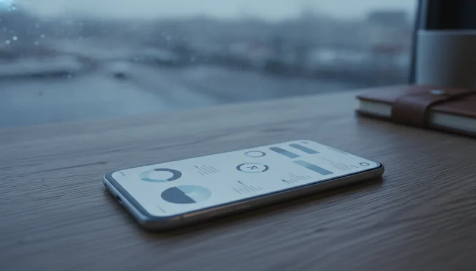
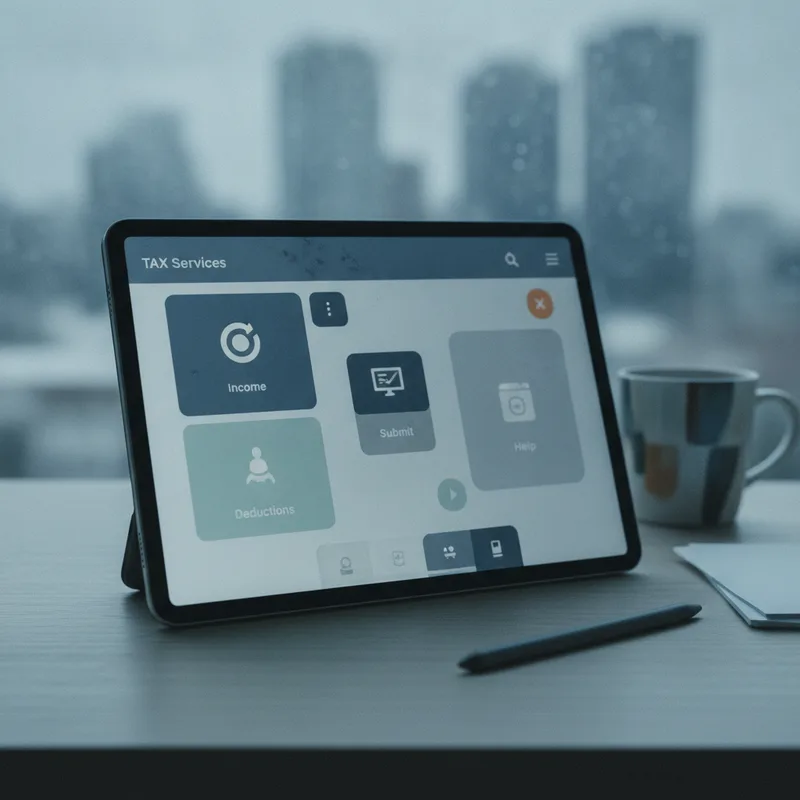

오는 2026년 12월부터는 지방정부에 일일이 문의하거나 별도 웹사이트에 로그인하지 않아도, 자주 쓰는 민간 금융·플랫폼 앱에서 지방세 환급금을 조회하고 신청까지 단번에 처리하는 체계가 도입됩니다. 기존의 계좌이체 방식에 더해 페이 머니 수령 옵션이 새로 포함되어 납세자의 절차적 번거로움이 크게 줄어들 예정입니다.

과거에는 납세액이 잘못 계산되었거나 소유권 이전 등으로 환급금이 발생해도, 이를 직접 안내받거나 알아서 청구하지 않으면 소액 환급금이 그대로 방치되는 경우가 잦았습니다. 번거로운 본인 인증과 복잡한 접속 과정을 거쳐야 했던 납세 절차가 생활 밀착형 플랫폼 안으로 들어가면서 실제 체감 편의성이 한층 높아지게 되었습니다.
그동안 세금을 과오납했거나 이중으로 낸 납세자가 금액을 되찾으려면 직접 관할 지자체 세무 부서에 문의하거나 위택스 누리집에 접속해야 했습니다. 사이트에 들어가서 별도의 인증을 거쳐 발생 여부를 검색하고, 지정 계좌를 입력한 뒤 청구 절차를 밟는 방식이었습니다.
이러한 개별 접속 방식은 인터넷 사용이 익숙하지 않거나 잊고 지나치기 쉬운 사용자들에게 접근 장벽으로 작용해 왔습니다. 이번에 개편되는 연계 방식은 행정안전부가 추진하는 디지털서비스 개방사업의 결과물입니다. 지방정부가 가진 정보를 금융결제원과 민간 기업 시스템에 다이렉트로 연계해, 평소 사용하던 앱 안에서 몇 번의 터치만으로 세금 환급금 조회가 마무리되는 방식입니다.
| 구분 | 기존 처리 방식 | 2026년 12월 도입 서비스 |
|---|---|---|
| 주 이용 창구 | 관할 지자체 세무과 문의 및 위택스 누리집 | 카카오, 은행, 카드사 등 9개 민간 앱 |
| 환급금 수령 수단 | 본인 명의 계좌이체 전용 | 계좌이체, 페이북 머니, 모니머니, 카카오페이 머니 |
| 정보 연계 방식 | 납세자 개별 조회 및 수동 청구 | 행정안전부·지방정부-금융결제원-민간 기업 시스템 직렬 연계 |
| 청구 절차 | 본인 인증 후 환급금 발생 여부 확인 및 계좌 입력 | 민간 앱 간편인증 후 조회 및 청구 통합 처리 |
기존 시스템에서는 본인 명의의 은행 계좌로만 돈을 송금받는 것이 가능했으나, 앞으로는 수령 방식이 다양해져 사용자가 원하는 형태로 자금을 돌려받을 수 있습니다. 환급받은 돈을 즉시 모바일 간편결제에 활용하고자 하는 수요까지 반영되어 이용 환경이 대폭 개편됩니다.

이번 시스템 구축 작업은 2026년 10월 행정안전부와 대한민국시도지사협의회, 시장·군수·구청장협의회, 금융결제원, 그리고 민간 기업들이 합심하여 추진 협약을 맺으면서 본격화되었습니다. 관련 내용은 지디넷코리아와 한경닷컴 등 주요 언론 보도를 통해서도 상세히 안내되었습니다.
이번 체계에 동참한 9개 민간 기업은 카카오, 카카오뱅크, 카카오페이, 비씨카드, 삼성카드(모니모), 신한은행, IBK기업은행, 아이엠뱅크, NH농협은행입니다. 이 중 카카오 계열 앱이나 모니모, 페이북 등의 앱을 이미 스마트폰에 설치해 두고 활용 중이라면 별도 프로그램을 추가로 깔 필요 없이 기존 앱 내에서 안내되는 절차를 따르면 됩니다.
새로 도입되는 페이 머니 수령 옵션 역시 주목할 만합니다. 계좌 번호를 외우거나 별도로 입력하는 번거로움 없이 카카오페이 머니, 비씨카드 페이북 머니, 삼성카드 모니머니 형태로 환급금을 지급받을 수 있습니다. 계좌 등록 단계에서 계좌번호 오탈자로 인해 신청이 취소되는 시행착오를 줄일 수 있다는 점이 장점입니다.
자주 쓰는 결제 수단이 무엇이냐에 따라 환급 수령처를 직접 선택할 수 있어 일상적인 모바일 금융 생활과 행정 서비스가 자연스럽게 조화됩니다. 국민 눈높이에 맞춰 일상적인 납세 및 행정 절차를 대폭 단순화한다는 것이 이번 정책 협약의 핵심 목표입니다.
올해 연말 개통 시점에 맞춰 잠자고 있던 지방세 환급금을 차질 없이 챙기기 위해 사전에 준비해 둘 수 있는 점들을 점검해 두는 것이 바람직합니다.
특히 환급금 조회 과정에서 주민등록번호 전체 입력이나 비밀번호 요구, 혹은 특정 계좌로 이금을 안내하는 방식은 절대 존재하지 않습니다. 모든 절차는 공식 인증을 거친 민간 앱 내부의 정식 메뉴를 통해서만 이루어지므로 이 점을 반드시 기억해 두어야 안전합니다.
지방세 환급금은 납세자가 세금을 두 번 내는 이중 납부를 했거나, 세액이 추후 재산정되어 실제로 납부해야 할 세금보다 더 많이 낸 경우 발생합니다. 대표적으로 자동차세를 1년 치 미리 납부한 뒤 중간에 차량을 매각하거나 폐차했을 때, 혹은 소득세 정산에 따라 지방소득세가 재산정되었을 때 환급금이 자주 생깁니다. 보도에 따르면 제주일보에서도 초과 납부된 지방세를 돌려받는 절차의 중요성을 다룬 바 있습니다.
서비스가 정식으로 시작되는 2026년 12월 이전까지는 기존 방식대로 정부 세금 납부 포털인 위택스 누리집에 접속해 간편인증 등으로 로그인한 뒤 조회해야 합니다. 인터넷 이용이 다소 번거롭다면 관할 시·군·구청 세무 부서에 직접 전화로 문의하여 본인 명의의 미환급금이 남아 있는지 확인할 수 있습니다.
| 슬롯 | 위치 | 기준 블록 | 근거 |
|---|---|---|---|
🖼 이미지 1 news-20261023-52fw-01-intro.webp | 문단 1 뒤 | P · 오는 **2026년 12월**부터는 지방정부에 일일이 문의하거나 별도 웹 | 도입부 첫 문단 뒤(히어로) |
🖼 이미지 2 news-20261023-52fw-02-middle.webp | 문단 8 앞 | H2 · 9개 민간 기업 앱에서 구현되는 통합 행정 | 글자수 기준 중간에 가장 가까운 소제목 앞 |
| 📢 광고 1 | 문단 13 앞 | H2 · 서비스를 이용하기 전 준비할 점 | H2 앞 · 직전 광고와 — 간격 |
🖼 이미지 3 news-20261023-52fw-03-end.webp | 문단 21 앞 | P · 서비스가 정식으로 시작되는 2026년 12월 이전까지는 기존 방식대로 정 | 마지막 문단 앞(마무리) |